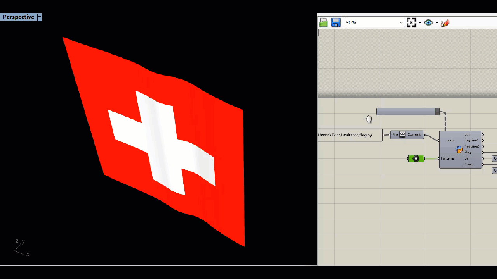
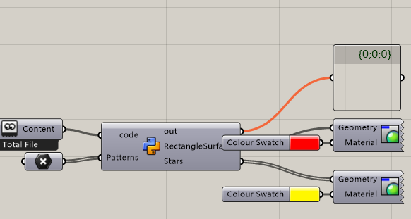
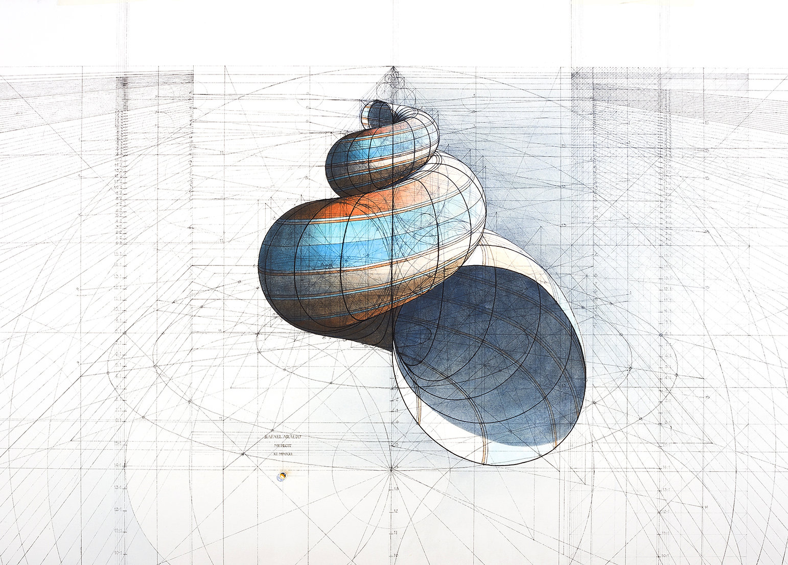
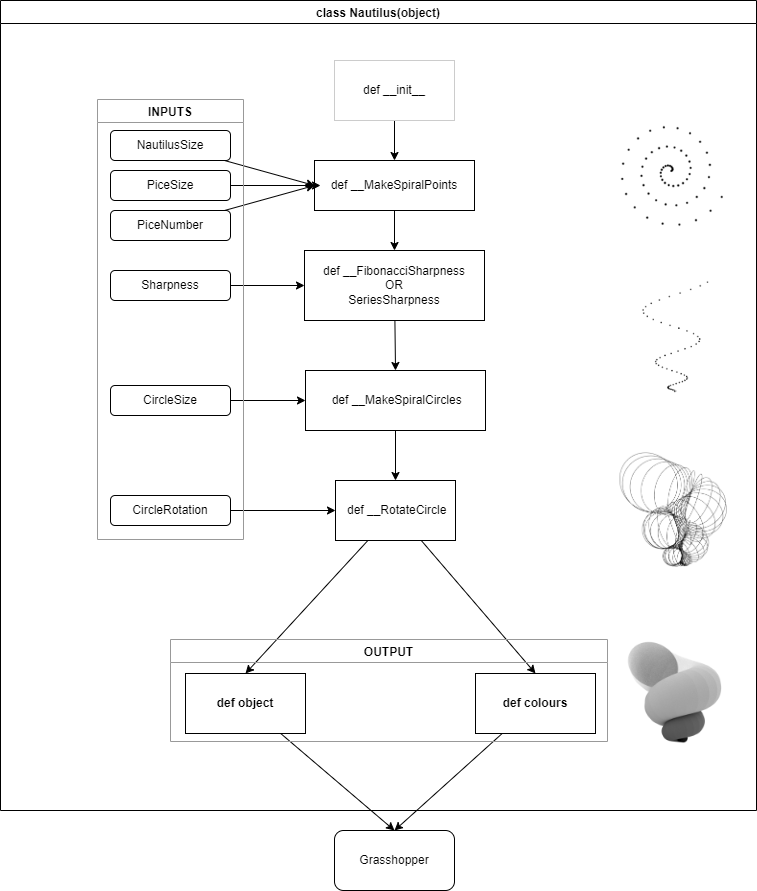

Contents: - Transformation - Floor division operator - Add list to a list - Tuple - Dictionary - Enumeration - Zip - Multiple returns in definition - Class - Flag in the wind - Chinese flag - Box class - Make a Nautilus
a = int(a)
b = str(3.14)
print (8//3) #answer is 2
list1.extend(list2)
Once created, cannot be changed
b = (element1, element2, ... , elementn)
a = ("c.biancheng.net", 1, [2,'a'], ("abc",3.0))
myDict = {"Name": "Zac", "Age": 23, "Gender": "Male"}
for i, animals in enumeration(animals):
print i
print (animals)
for animal, number in zip(animals, numbers):
print animal
print number
def function ( var1, var2):
doSomething()
return x, y
a, b = function(var1, var2)
# a = x, b=y
class Message :
message = "Hello World"
myMessage = Message

# This script is to generate a flag animation
# Import
from cgitb import reset
import scriptcontext as sc
import Rhino.Geometry as rg
import copy
import math
import Rhino.Geometry.Brep as rb
# Initial variables
flagLength = 500 #mm
flagWidth = 500 #mm
subdivision = 10 #Must be integer
reset = False #In case to initialize
# Wave the flag
def waveFlag (FlagLength, FlagWidth,Amplitude, Subdivision):
if "wavingVariable" not in sc.sticky or reset:
sc.sticky["wavingVariable"] = []
for i in range(subdivision):
sc.sticky["wavingVariable"].append(rg.Point3d((FlagLength/(Subdivision-1))*i,math.sin(math.pi * Subdivision/(i+1)) * Amplitude, 0) )
else:
for i in range (len(sc.sticky["wavingVariable"])):
tempPointI = copy.deepcopy(sc.sticky["wavingVariable"][i])
if i == len (sc.sticky["wavingVariable"])-1:
tempPoint0 = copy.deepcopy(sc.sticky["wavingVariable"][0])
sc.sticky["wavingVariable"][i] = rg.Point3d(tempPointI.X,tempPoint0.Y, 0 )
else:
tempPointJ =copy.deepcopy(sc.sticky["wavingVariable"][i+1])
sc.sticky["wavingVariable"][i] = rg.Point3d(tempPointI.X,tempPointJ.Y, 0 )
return sc.sticky["wavingVariable"]
# Output flag
flagPoints1 = waveFlag( flagLength, flagWidth, 10, subdivision)
flagLine1 = rg.NurbsCurve.Create(False, 2, flagPoints1)
flagPoints2 = []
for i in flagPoints1:
flagPoint2 = rg.Point3d(i.X, i.Y, flagWidth)
flagPoints2.append(flagPoint2)
flagLine2 = rg.NurbsCurve.Create(False, 2, flagPoints2)
Flag = rg.NurbsSurface.CreateRuledSurface(flagLine1,flagLine2 )
# Make a cross on the flag
Patterns.append(Patterns[0])
line = rg.PolylineCurve(Patterns) #Cross line
surface = rg.Surface.CreateExtrusion(line, rg.Vector3d(0,300,0))
b1 = rb.CreateFromSurface(surface)
b2 = rb.CreateFromSurface(Flag)
splitted = rb.Split(b2, b1, 0.01)
Flag = splitted[0]
Cross = splitted[1]

# Import
from cgitb import reset
import scriptcontext as sc
import Rhino.Geometry as rg
import copy
import math
import Rhino.Geometry.Brep as rb
#Def
class Star:
def __init__(self,xpos,ypos,rad,peaks,f,c=(255,0,0,0)):
self.xpos = xpos
self.ypos = ypos
self.rad = rad
self.peaks = peaks
self.factor = f
def draw(self):
pts_star = []
res = self.peaks * 2
theta = 2 * math.pi / res
for i in range(res):
if i%2 == 0:
radius = self.rad * self.factor
else:
radius = self.rad
xc = self.xpos + math.cos(theta*i-theta/2) * radius
yc = self.ypos + math.sin(theta*i-theta/2) * radius
pts_star.append(rg.Point3d(xc,yc,0.2))
curve_star = rg.NurbsCurve.Create(True,1,pts_star)
star = rg.Brep.CreatePlanarBreps(curve_star,0.001)
return star
# Initial variables
flagLength = 2880 #mm
flagWidth = 1920 #mm
# Draw stars
star1 = Star(Patterns[0].X,Patterns[0].Y,200,5,0.4)
star2 = Star(Patterns[1].X,Patterns[1].Y,70,5,0.4)
star3 = Star(Patterns[2].X,Patterns[2].Y,70,5,0.4)
star4 = Star(Patterns[3].X,Patterns[3].Y,70,5,0.4)
star5 = Star(Patterns[4].X,Patterns[4].Y,70,5,0.4)
Stars = []
Stars=star1.draw()
Stars += star2.draw()
Stars+= star2.draw()
Stars+=star3.draw()
Stars+=star4.draw()
Stars+=star5.draw()
# Draw background
RectangleSurface = rg.NurbsSurface.CreateFromCorners(rg.Point3d(0,0,0), rg.Point3d(flagLength,0,0), rg.Point3d(flagLength, flagWidth, 0), rg.Point3d(0,flagWidth,0))
import Rhino.Geometry as rg
from ghpythonlib.components import ColourRGB
class Rectangle(object):
# Initialize my object
def __init__(self, x,y,z,w,d,h, v =(0,0,1), c=(255,255,255,255)):
self.x = x
self.y = y
self.z = z
self.vector = rg.Vector3d(v[0], v[1], v[2])
self.center = rg.Point3d(x,y,z)
self.plane = rg.Plane(rg.Point3d(0,0,0), rg.Vector3d(0,0,1))
self.w = w
self.d =d
self.h =h
self.volume = w * d* h
self.rect = None
self.colour = ColourRGB(c[0], c[1], c[2], c[3])
def draw(self):
self.rect = rg.Box(self.plane, rg.Interval(-self.w/2, self.w/2),
rg.Interval(-self.d/2, self.d/2),
rg.Interval(-self.h/2, self.h/2))
objects = []
colours = []
totalVolume = 0
r = Rectangle(0,0,0,10,10,5)
r.draw()
objects.append(r.rect)
colours.append(r.colour)
Objects = objects
Colours = colours


# IMPORT
from copy import copy
import Rhino.Geometry as rg
import math
from ghpythonlib.components import ColourRGB
# INPUTS
# NautilusSize
# PiceSize
# PiceNumber
# Sharpness
# CircleSize
# CircleRotation
# CLASS
class Nautilus(object):
# initialize
def __init__(self, NautilusSize, PiceSize, PiceNumber, Sharpness, CircleSize, CircleRotation):
self.nautilusSize = NautilusSize
self.piceSize = PiceSize
self.piceNumber = PiceNumber
self.sharpness = Sharpness
self.circle = CircleSize
self.circleRotation = CircleRotation
self.circles = self.__MakeSpiralCircles(
self.__MakeSpiralPoints(NautilusSize, PiceSize, PiceNumber, Sharpness), CircleSize
)
def __FibonacciSharpness(PiceNumber, Sharpness):
zSharpness = []
zSharpness.append(Sharpness)
zSharpness.append(Sharpness)
for i in range(PiceNumber - 2):
zSharpness.append(zSharpness[i] + zSharpness[i + 1])
return zSharpness
def __RotateCircle(self,circle, rotation):
# circle = rg.Circle(x)
circle.Transform(
rg.Transform.Rotation(
rg.Vector3d(1, 0, 0),
rg.Vector3d(math.cos(rotation), math.sin(rotation), 0),
circle.Center,
)
)
return circle
def __MakeSpiralPoints(self, NautilusSize, PiceSize, PiceNumber, Sharpness):
# Outcome point3d[]
points = []
for t in range(PiceNumber):
r = NautilusSize * t
x = r * math.cos(2 * math.pi * t * PiceSize * 0.1)
y = r * math.sin(2 * math.pi * t * PiceSize * 0.1)
# ys = FibonacciSharpness(PiceNumber, Sharpness)#! FibonacciSharpness
# points.append(rg.Point3d(x,y,ys[t]))#! FibonacciSharpness
# print ys
points.append(rg.Point3d(x, y, Sharpness * t * t))
return points
def __MakeSpiralCircles(self, SpiralPoints, Size):
circles = []
for i in range(len(SpiralPoints) - 1):
# Make the vector
vector = rg.Vector3d(SpiralPoints[i + 1] - SpiralPoints[i])
# Make the plane
plane = rg.Plane((SpiralPoints[i + 1] + SpiralPoints[i]) / 2, vector)
# Rotate plane #!Hard part
xAxis = copy(plane.XAxis)
xAxis.Transform(rg.Transform.ProjectAlong(rg.Plane.WorldXY, plane.YAxis))
plane.Transform(rg.Transform.Rotation(plane.XAxis, xAxis, plane.Origin))
if plane.YAxis.Z < 0:
plane = rg.Plane(plane.Origin, -plane.XAxis, -plane.YAxis)
# Make circle
circle = rg.Circle(plane, Size * (i + 1))
circles.append(self.__RotateCircle(circle, (i / (len(SpiralPoints) - 1)) * CircleRotation))
return circles
def colours(self):
Colours = []
for i in range(len(self.circles) - 1):
colour = ColourRGB(
255,
i * 255 / (len(self.circles) - 1),
i * 255 / (len(self.circles) - 1),
i * 255 / (len(self.circles) - 1),
)
Colours.append(colour)
return Colours
def object(self):
Nautilus = []
for i in range(len(self.circles) - 1):
Nautilus.append(
rg.NurbsSurface.CreateRuledSurface(
self.circles[i].ToNurbsCurve(), self.circles[i + 1].ToNurbsCurve()
)
)
return Nautilus
nautilus = Nautilus(NautilusSize, PiceSize, PiceNumber, Sharpness, CircleSize, CircleRotation)
Objects = nautilus.object()
Colours = nautilus.colours()
Circles = nautilus.circles
--- Growing, Growing, Brighter Everyday ! ---